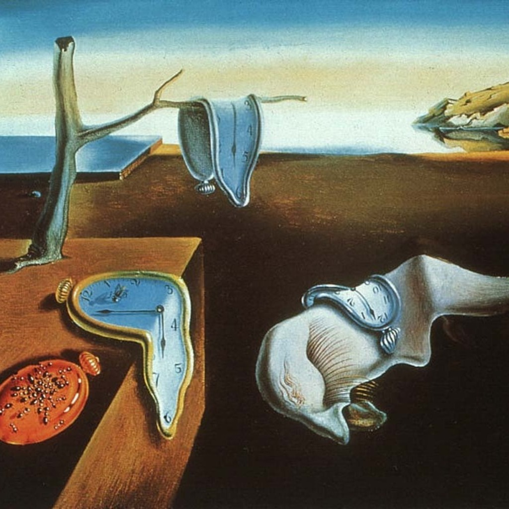

¿Qué es el arte y por qué nos importa?

¿Qué es el arte?
El arte está presente en todos lados. Lo vemos en un mural de la calle, en una canción, en una película, en una escultura o en una pintura. Pero muchas veces nos preguntamos: ¿qué es realmente el arte? ¿Para qué sirve? ¿Por qué es tan importante?
El arte es una forma de expresar ideas, emociones y formas de ver el mundo. No importa si es antiguo o moderno, sencillo o complejo: el arte siempre busca comunicar algo. A lo largo de la historia, ha sido una herramienta muy valiosa para contar lo que siente una persona o una sociedad.

Tres aspectos clave que nos ayudan a entender por qué el arte es tan importante:
1. El arte como reflejo del tiempo
Cada obra de arte pertenece a una época. Por eso, cuando vemos una pintura o una escultura de hace cientos de años, no solo estamos viendo algo bonito, también estamos conociendo un pedazo de historia. El arte nos habla de cómo vivía la gente, qué creía, qué temía y qué soñaba.Por ejemplo, en el arte egipcio se puede ver cómo era su religión y su forma de vida. En la Edad Media, el arte mostraba escenas religiosas porque era lo más importante en ese tiempo. En el siglo XX, muchos artistas comenzaron a hablar de guerras, protestas o derechos humanos. El arte es como una ventana al pasado.